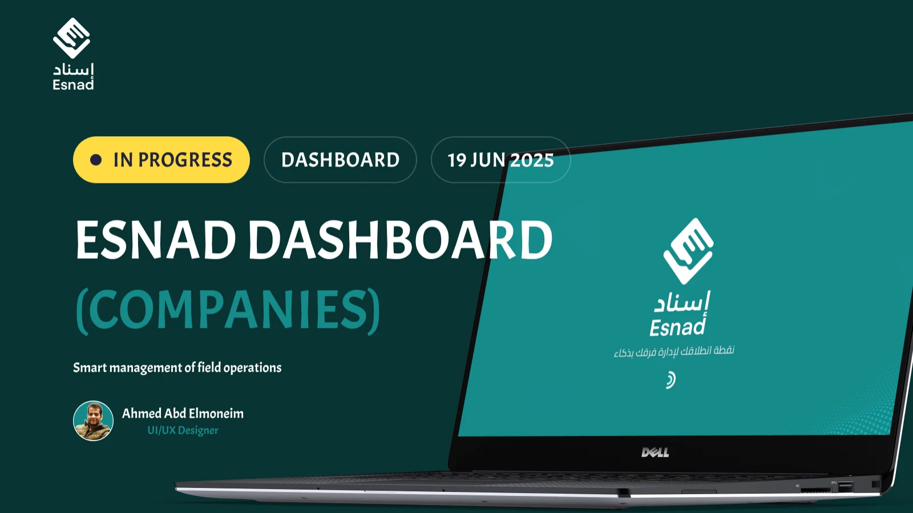

Connect the field and office views
The app and company dashboard address different sides of the same task: the employee doing the work and the team organising it.
HR · Field operations
Connecting field tasks with the people doing the work.

01 / CONTEXT
Esnad is an HR and field task management platform with GPS tracking. My freelance work covers the mobile app, company dashboard, and landing page.
02 / MY WORK
03 / DESIGN DECISIONS
The app and company dashboard address different sides of the same task: the employee doing the work and the team organising it.

04 / DELIVERY
Designed the app, dashboard, and landing page as connected parts of the platform.